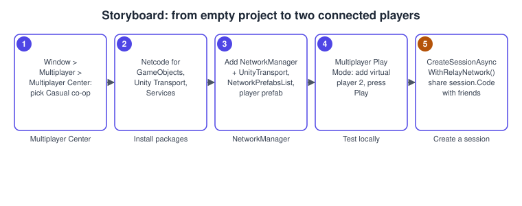
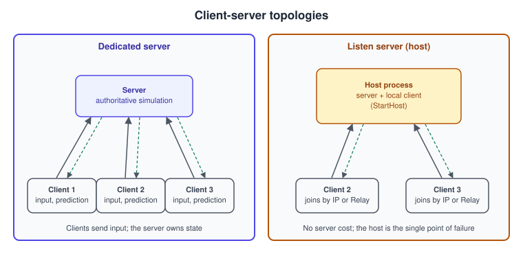
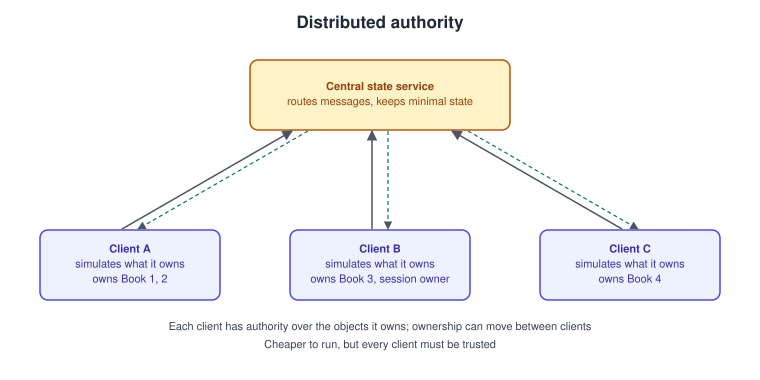

Multiplayer and Netcode
|
This content was generated with the assistance of AI and should be verified against the official documentation before being relied on in production. |
A multiplayer game is a distributed system with a frame rate: several computers must agree on the state of one world while each of them draws it sixty times a second, over connections that lose packets and take tens of milliseconds to deliver them. Unity’s answer is a set of packages rather than one system. This page covers the ones that matter for the Bookshelf’s co-op version of "Shelve-it", two to four players catching falling books: how to choose between them with the Multiplayer Center, the topologies they support, Netcode for GameObjects (NGO) for classic GameObject projects, Netcode for Entities for DOTS projects, and the Multiplayer Services that connect players.
The facts were checked in November 2026. The version documented is Unity 6.3 LTS (6000.3) with Netcode for GameObjects 2.x (the 2.7 documentation is cited), Netcode for Entities 1.14, Multiplayer Services 2.4, Multiplayer Play Mode 2.0 and Unity Transport, the versions in the 6.3 LTS package list. NGO 2.x requires Unity 6.0 or later and supports the Mono and IL2CPP scripting backends; it runs on Windows, macOS, Linux, iOS, Android, XR platforms and most closed platforms, and on the Web platform with Unity Transport 2.0 or later. Services need a Unity account and a project linked to a Unity Cloud project, and some of them are paid beyond a free tier, so read the current terms. Neither of the two reference books covers Unity’s netcode. The theory of networked games (authority, snapshots, interpolation, lag compensation) is in Multiplayer Game Architecture, Latency Compensation, Game Servers and Colyseus and Building a Multiplayer Game; this page stays Unity-specific.
Choosing a stack with the Multiplayer Center
The Multiplayer Center is an Editor window that recommends packages and services for the kind of game you are making. Open it with Window > Multiplayer > Multiplayer Center, select the game specifications, review the recommended packages in the Recommendation tab and install them; its Quickstart tab then links to guidance and samples for what was installed. If the center detects other multiplayer packages in the project it warns before installing, because mixing netcode solutions can cause compatibility problems.
| Game type | Networking solution | Connecting players | Developing and testing |
|---|---|---|---|
Casual co-op: puzzle games, group exploration, co-op platformers |
Netcode for GameObjects and Unity Transport |
Multiplayer Services SDK |
Multiplayer Play Mode and Multiplayer Tools |
Competitive: shooters, fighting games, battle royales |
Netcode for Entities and Unity Transport |
Multiplayer Services SDK and a server hosting service of your choice |
Multiplayer Play Mode, thin clients and the Network Profiler |
Turn-based: strategy, board and card games |
Cloud Code |
Multiplayer Services SDK |
Multiplayer Play Mode |
The Bookshelf co-op game is a casual co-op game, so it uses NGO. A competitive version with hundreds of books and prediction would use Netcode for Entities.
Source: Unity Multiplayer: Get started with the Multiplayer Center and Unity 6.3 Manual: Multiplayer.
Procedure: from an empty project to two connected players
-
Open the Multiplayer Center, choose the game specifications that match a casual co-op game and press Install Packages. Source: Multiplayer Center.
-
Add an empty GameObject named
NetworkManagerwith theNetworkManagercomponent and aUnityTransportcomponent; the manager is the central netcode hub that holds the settings. Source: NGO: NetworkManager. -
Turn the player (the catcher) and the falling book into prefabs with a
NetworkObjecton the root, create a NetworkPrefabsList asset (Create > Netcode > NetworkPrefabsList), add both prefabs to it and assign the list and the player prefab to theNetworkManager. Source: NGO: Object spawning. -
Test in the Editor without building: open Window > Multiplayer > Multiplayer Play Mode, add a virtual player and press Play; each virtual player runs in its own Editor instance. Source: Multiplayer Play Mode.
-
Connect over the Internet with a session: authenticate, create a session with Relay networking on the host and join by code on the other player (the
CoopSessionLauncherbelow). Source: Multiplayer Services: Create a session.

Topologies
A topology says who runs the simulation. NGO 2.x supports two, and Unity documents them side by side.

Client-server gives the server final say over game state: clients send inputs and requests, the server runs the main simulation and replicates state. It comes in two forms. A dedicated server is a separate machine that only simulates, which gives better tick rates and resilience to compromised clients but costs hardware and running costs, and latency depends on its location. A listen server (a host) is one game instance that is both server and a local client: no extra infrastructure, but the host is a single point of failure and is trusted completely. Choose client-server when you need a trusted authority to protect state or when you need client-side prediction with rollback.

Distributed authority shares ownership of networked objects across game instances. Each client simulates the part of the world it owns, and a small central state service routes traffic and keeps minimal state; there is no simulating server. It is cheaper to run and gives owners immediate control, with a simpler workflow for spawning visually synchronised objects, but it relies on every client being trustworthy and updates are relayed through the service, which adds latency. In distributed authority any client may spawn objects and becomes their authority, the first client to join becomes the session owner, and NetworkVariable instances are set to owner-write, everyone-read automatically. Connection approval has no effect.
A rule of thumb for the Bookshelf: use distributed authority for a friendly co-op game where players do not compete for rewards, and client-server (with a dedicated server) as soon as scores, matchmaking or cheating matter.
Netcode for GameObjects
NGO is a high-level library for GameObject projects: it lets you send GameObjects and world data to the players of a session without working with sockets. Its building blocks:
-
NetworkManager starts and stops the session and holds the settings.
StartServer()runs a dedicated server (client-server only),StartHost()runs a server and a local client (client-server only), andStartClient()connects to a server or host, or joins a distributed authority session. Do not start it inside a NetworkBehaviour’sAwake. Its inspector lists the transport, the network prefabs and the player prefab, the Tick Rate (which sets how often NetworkVariables update), Force Same Prefabs, connection approval and scene management. -
UnityTransport is the recommended transport. It uses
SetConnectionData(ip, port, listenAddress)for direct connections; with Relay you use the relay data calls instead, and the session API below does this for you. -
NetworkObject marks a GameObject as networked; it must be on the root of a network prefab. NetworkBehaviour is the base class for scripts on it, with
OnNetworkSpawn,OnNetworkDespawnand properties such asIsServer,IsOwner,IsSpawnedandHasAuthority. -
Spawning is separate from
Instantiate, which only creates an object locally: instantiate the prefab, then callSpawn()on itsNetworkObject. In client-server only the server or host can spawn; in distributed authority any client can, and the spawner becomes the authority. Only the authority can despawn, and the default despawn also destroys the object on all clients; clients ask the authority to do it with an RPC. -
Authority and ownership. Each object has exactly one authority, which has final control over its state.
HasAuthorityworks in both topologies and is the recommended check;IsServerexists only in client-server. -
NetworkTransform synchronises position, rotation and scale. Its Authority Mode (client-server only) can be set to Owner, which suits a player prefab where response to input matters, while server authority suits AI, NPCs and pickups; the Axis to Synchronize flags save bandwidth, and interpolation smooths non-authoritative copies at the price of a small delay.
Source: NGO: NetworkManager, NGO: NetworkObject, NGO: NetworkBehaviour, NGO: Authority and NGO: NetworkTransform.
NetworkVariable or RPC?
| NetworkVariable | RPC | |
|---|---|---|
What it is |
a value that NGO keeps synchronised between the server and the clients |
a method call that runs on another machine |
Late joiners |
receive the current value on spawn |
never see past calls |
Good for |
state: score, health, time left, whether a door is open |
events and requests: "I caught this book", "restart", "play a sound" |
Reliability |
always delivered, latest value |
reliable by default, can be marked unreliable |
A NetworkVariable<T> has an initial value and two permissions: read (Everyone by default, or Owner) and write (Server by default, or Owner). It supports primitives, enums, Unity types such as Vector3 and Quaternion, FixedString types and structs that implement INetworkSerializable; managed strings are not supported. OnValueChanged takes the previous and the current value; subscribe in OnNetworkSpawn and unsubscribe in OnNetworkDespawn.
An RPC is a method marked [Rpc(SendTo.Something)] whose name ends in Rpc, declared in a NetworkBehaviour on a spawned NetworkObject. The SendTo target names the receiver: Server, NotServer (client-server only), Owner, NotOwner, Me, NotMe, Everyone, ClientsAndHost or SpecifiedInParams. Attribute parameters include Delivery (reliable by default, or unreliable), InvokePermission (Server, Owner or Everyone), AllowTargetOverride and DeferLocal. The last parameter of an RPC may be an RpcParams, which is not serialised; on the receiving side it carries the sender’s client id.
Source: NGO: NetworkVariable, NGO: RPC and NGO: Messaging system.
The co-op catcher
The catcher (the player) moves left and right under owner authority, the server spawns falling books, the server detects a catch and increases the catcher’s score, and every client shows the score through a NetworkVariable. Put NetworkObject, NetworkTransform (Authority Mode: Owner), a kinematic Rigidbody and a trigger Collider on the catcher prefab.
// Assets/Scripts/Net/CatcherPlayer.cs
using Unity.Netcode;
using UnityEngine;
using UnityEngine.InputSystem;
namespace Bookshelf.Net
{
[RequireComponent(typeof(Rigidbody))]
public sealed class CatcherPlayer : NetworkBehaviour
{
[SerializeField] float speed = 6f;
[SerializeField] float halfWidth = 4f;
// Only the server writes the score; everyone can read it, including players who join later.
public readonly NetworkVariable<int> Score = new NetworkVariable<int>(0);
public override void OnNetworkSpawn()
{
Score.OnValueChanged += OnScoreChanged;
if (IsOwner) name = "Catcher (local)";
}
public override void OnNetworkDespawn()
{
Score.OnValueChanged -= OnScoreChanged;
}
void OnScoreChanged(int previous, int current)
{
Debug.Log($"Player {OwnerClientId} score {previous} -> {current}");
}
void Update()
{
if (!IsSpawned || !IsOwner) return; // only the owner reads the keyboard
Keyboard keyboard = Keyboard.current;
if (keyboard == null) return;
float x = (keyboard.rightArrowKey.isPressed ? 1f : 0f) - (keyboard.leftArrowKey.isPressed ? 1f : 0f);
Vector3 position = transform.position + Vector3.right * (x * speed * Time.deltaTime);
position.x = Mathf.Clamp(position.x, -halfWidth, halfWidth);
transform.position = position; // NetworkTransform (owner authority) replicates it
}
// Runs on the server's copy of the catcher, where the server decides whether a book was caught.
void OnTriggerEnter(Collider other)
{
if (!IsServer) return;
if (!other.TryGetComponent(out FallingBook book)) return;
if (!book.NetworkObject.IsSpawned) return;
Score.Value += 1; // server-side write, synchronised to everyone
book.NetworkObject.Despawn(); // the authority despawns, which also destroys it on all clients
}
}
}// Assets/Scripts/Net/FallingBook.cs
using Unity.Netcode;
using UnityEngine;
namespace Bookshelf.Net
{
/// <summary>A falling book simulated by the server; NetworkTransform (server authority) replicates the motion.</summary>
[RequireComponent(typeof(NetworkObject))]
public sealed class FallingBook : NetworkBehaviour
{
[SerializeField] float fallSpeed = 3f;
[SerializeField] float floorY = -1f;
void Update()
{
if (!IsSpawned || !IsServer) return;
transform.position += Vector3.down * (fallSpeed * Time.deltaTime);
if (transform.position.y < floorY) NetworkObject.Despawn();
}
}
}// Assets/Scripts/Net/FallingBookSpawner.cs
using System.Collections;
using Unity.Netcode;
using UnityEngine;
namespace Bookshelf.Net
{
/// <summary>Lives in the scene as a NetworkObject; only the server spawns books, and it also owns the round timer.</summary>
public sealed class FallingBookSpawner : NetworkBehaviour
{
[SerializeField] NetworkObject bookPrefab; // must be in the NetworkPrefabsList
[SerializeField] float interval = 0.8f;
[SerializeField] float halfWidth = 4f;
[SerializeField] float height = 6f;
[SerializeField] float roundSeconds = 60f;
public readonly NetworkVariable<float> TimeLeft = new NetworkVariable<float>(0f);
public override void OnNetworkSpawn()
{
if (!IsServer) return;
TimeLeft.Value = roundSeconds;
StartCoroutine(SpawnLoop());
}
IEnumerator SpawnLoop()
{
while (TimeLeft.Value > 0f)
{
Vector3 position = new Vector3(Random.Range(-halfWidth, halfWidth), height, 0f);
NetworkObject book = Instantiate(bookPrefab, position, Quaternion.identity);
book.Spawn(); // instantiate, then Spawn: now every client gets a copy
yield return new WaitForSeconds(interval);
TimeLeft.Value -= interval;
}
RoundOverRpc();
}
// Server to all clients (and the host): the round is over.
[Rpc(SendTo.ClientsAndHost)]
public void RoundOverRpc()
{
Debug.Log("Round over");
}
// A client asks the server for a new round; InvokePermission is Everyone by default.
[Rpc(SendTo.Server)]
public void RestartRpc(RpcParams rpcParams = default)
{
Debug.Log($"Restart requested by client {rpcParams.Receive.SenderClientId}");
StopAllCoroutines();
TimeLeft.Value = roundSeconds;
StartCoroutine(SpawnLoop());
}
}
}Source: NGO: Object spawning and NGO: RPC.
Notes on the code: OnTriggerEnter is evaluated on the server’s copy of the objects, so the server decides; the book is despawned only by the authority, and a client that wants to remove a networked object must ask through an RPC rather than call Destroy. In-scene placed NetworkObjects such as the spawner call Start before OnNetworkSpawn, while dynamically spawned ones call OnNetworkSpawn first. The local Debug.Log in RoundOverRpc stands for a UI update; the Toolkit HUD is in UI Toolkit.
Sessions: connecting players with Multiplayer Services
The Multiplayer Services SDK unifies the Lobby, Matchmaker and Relay services under one API built around sessions. A session is an abstraction layer, not a standalone service: a group of players connected for a period of time, with a host, clients, session properties and player properties. The host creates a session and shares its join code; the other players join by code, by browsing public sessions or through matchmaking. WithRelayNetwork() makes the session connect through Unity Relay instead of a fixed IP and port, which the documentation recommends for peer-to-peer connectivity over the Internet; WithDistributedAuthorityNetwork() selects distributed authority. The SDK integrates with Netcode for GameObjects and Netcode for Entities out of the box; if you leave out the network call, the session is created without starting a netcode connection, and you start it later.
// Assets/Scripts/Net/CoopSessionLauncher.cs
using System.Threading.Tasks;
using Unity.Services.Authentication;
using Unity.Services.Core;
using Unity.Services.Multiplayer;
using UnityEngine;
namespace Bookshelf.Net
{
/// <summary>Creates or joins a Relay session. The project must be linked to a Unity Cloud project.</summary>
public sealed class CoopSessionLauncher : MonoBehaviour
{
[SerializeField, Min(2)] int maxPlayers = 4;
ISession _session;
public string JoinCode => _session?.Code;
async Task EnsureSignedInAsync()
{
if (UnityServices.State == ServicesInitializationState.Uninitialized)
await UnityServices.InitializeAsync();
if (!AuthenticationService.Instance.IsSignedIn)
await AuthenticationService.Instance.SignInAnonymouslyAsync();
}
public async Task HostAsync()
{
await EnsureSignedInAsync();
var options = new SessionOptions { MaxPlayers = maxPlayers }.WithRelayNetwork();
_session = await MultiplayerService.Instance.CreateSessionAsync(options);
Debug.Log($"Session {_session.Id} created. Join code: {_session.Code}");
}
public async Task JoinAsync(string joinCode)
{
await EnsureSignedInAsync();
_session = await MultiplayerService.Instance.JoinSessionByCodeAsync(joinCode);
Debug.Log($"Joined session {_session.Id}");
}
public async Task LeaveAsync()
{
if (_session == null) return;
await _session.LeaveAsync();
_session = null;
}
async void OnDestroy()
{
await LeaveAsync();
}
}
}Source: Multiplayer Services: Create a session, Multiplayer Services: Find and join a session and Multiplayer Services: Network connection management.
If a session is created and the player is disconnected but remains a member, ReconnectAsync reconnects to it; a player who has been removed must join again with the code. The Unity Authentication service requires that games notify end users of certain actions under the EU Digital Services Act, so integrate the notification API if you use it.
Netcode for Entities
Netcode for Entities is a server-authoritative framework with client prediction, built on the Entities package (see DOTS: ECS, Jobs and Burst). It needs a working knowledge of ECS. Its main ideas:
-
Client and server worlds. Adding the package adds the default
ClientServerBootstrap, which creates a client world and a server world at start-up, including when you enter Play mode, so one Editor can run both. A host is a client device that also runs the server role; thin clients (clients without presentation) are used to load-test the server. Systems choose where they run withWorldSystemFilterflags:ServerSimulation,ClientSimulation,ThinClientSimulationorLocalSimulation. -
Ghosts. A ghost is a networked entity that the server owns and simulates; the server has final authority and a client can only predict. You create one by adding a ghost authoring component to a prefab and setting its name, importance, Supported Ghost Mode (interpolated, predicted or both), Default Ghost Mode (interpolated, predicted or owner predicted) and Optimization Mode (dynamic for things that change often, static for things that rarely do).
[GhostField]on a struct field marks it for replication; a component is replicated once one field has the attribute. -
Snapshots. A snapshot is the server’s state of all ghosts for one network tick, sent to each client at
NetworkTickRate; the server’s fixed simulation tick defaults to 60 per second. A snapshot is capped at the MTU size, so a large world is sent as partial snapshots, with higher-importance chunks first. -
Prediction and interpolation. Predicted ghosts are simulated on the client ahead of the server with the player’s own inputs, and corrected when the authoritative snapshot arrives; interpolated ghosts are shown slightly in the past, smoothly. Owner predicted means the owning client predicts its ghost and all other clients interpolate it. Prediction code runs in
PredictedSimulationSystemGroup. -
Inputs. A struct that implements
IInputComponentDataholds one player’s input; a system inGhostInputSystemGroupfills it from the Input System on the owning client, and Netcode sends it to the server with enough history to predict. -
RPC commands. A struct that implements
IRpcCommandis a reliable one-off message that is not tied to a tick: create an entity with the command and aSendRpcCommandRequestcomponent to send it, and receive it as an entity with the command and aReceiveRpcCommandRequest, which names the source connection. RPC commands communicate game flow, such as telling the server a client is ready ("go in game").
Source: Netcode for Entities 1.14, Netcode: Client and server worlds, Netcode: Ghosts and snapshots, Netcode: Prediction and Netcode: RPCs.
The catcher as a ghost: movement is predicted from a replicated input, and the score is a [GhostField].
// Assets/Scripts/NetEcs/CatcherComponents.cs
using Unity.Entities;
using Unity.NetCode;
namespace Bookshelf.NetEcs
{
/// <summary>One player's input for a tick, sampled on the owning client and sent to the server.</summary>
public struct CatcherInput : IInputComponentData
{
public int Horizontal;
}
/// <summary>Replicated state of a catcher.</summary>
public struct CatcherScore : IComponentData
{
[GhostField] public int Value;
}
/// <summary>Sent by a client once it is connected, so the server starts replicating and spawns its catcher.</summary>
public struct GoInGameRequest : IRpcCommand { }
}// Assets/Scripts/NetEcs/CatcherSystems.cs
using Unity.Burst;
using Unity.Entities;
using Unity.Mathematics;
using Unity.NetCode;
using Unity.Transforms;
using UnityEngine.InputSystem;
namespace Bookshelf.NetEcs
{
/// <summary>Runs on clients only: fills the input of the local player's ghost every frame.</summary>
[UpdateInGroup(typeof(GhostInputSystemGroup))]
public partial struct SampleCatcherInputSystem : ISystem
{
public void OnCreate(ref SystemState state)
{
state.RequireForUpdate<NetworkStreamInGame>();
}
public void OnUpdate(ref SystemState state)
{
Keyboard keyboard = Keyboard.current;
if (keyboard == null) return;
foreach (var input in SystemAPI.Query<RefRW<CatcherInput>>().WithAll<GhostOwnerIsLocal>())
{
input.ValueRW = default;
if (keyboard.leftArrowKey.isPressed) input.ValueRW.Horizontal -= 1;
if (keyboard.rightArrowKey.isPressed) input.ValueRW.Horizontal += 1;
}
}
}
/// <summary>Predicted movement: runs on the server and, ahead of it, on the owning client.</summary>
[UpdateInGroup(typeof(PredictedSimulationSystemGroup))]
[BurstCompile]
public partial struct MoveCatcherSystem : ISystem
{
const float Speed = 6f;
[BurstCompile]
public void OnUpdate(ref SystemState state)
{
float dt = SystemAPI.Time.DeltaTime;
foreach (var (transform, input) in SystemAPI.Query<RefRW<LocalTransform>, RefRO<CatcherInput>>().WithAll<Simulate>())
{
float x = transform.ValueRO.Position.x + input.ValueRO.Horizontal * Speed * dt;
transform.ValueRW.Position.x = math.clamp(x, -4f, 4f);
}
}
}
}// Assets/Scripts/NetEcs/GoInGame.cs
using Unity.Burst;
using Unity.Collections;
using Unity.Entities;
using Unity.NetCode;
namespace Bookshelf.NetEcs
{
/// <summary>Singleton in the sub scene that names the catcher ghost prefab.</summary>
public struct CatcherSpawner : IComponentData
{
public Entity Catcher;
}
/// <summary>Client: as soon as the connection has a NetworkId, go in game and tell the server.</summary>
[BurstCompile]
[WorldSystemFilter(WorldSystemFilterFlags.ClientSimulation | WorldSystemFilterFlags.ThinClientSimulation)]
public partial struct GoInGameClientSystem : ISystem
{
[BurstCompile]
public void OnCreate(ref SystemState state)
{
state.RequireForUpdate<CatcherSpawner>();
state.RequireForUpdate(state.GetEntityQuery(
new EntityQueryBuilder(Allocator.Temp).WithAll<NetworkId>().WithNone<NetworkStreamInGame>()));
}
[BurstCompile]
public void OnUpdate(ref SystemState state)
{
var ecb = new EntityCommandBuffer(Allocator.Temp);
foreach (var (id, connection) in SystemAPI.Query<RefRO<NetworkId>>().WithEntityAccess().WithNone<NetworkStreamInGame>())
{
ecb.AddComponent<NetworkStreamInGame>(connection);
Entity request = ecb.CreateEntity();
ecb.AddComponent<GoInGameRequest>(request);
ecb.AddComponent(request, new SendRpcCommandRequest { TargetConnection = connection });
}
ecb.Playback(state.EntityManager);
}
}
/// <summary>Server: for each request, mark the connection in game and spawn a catcher ghost owned by that client.</summary>
[BurstCompile]
[WorldSystemFilter(WorldSystemFilterFlags.ServerSimulation)]
public partial struct GoInGameServerSystem : ISystem
{
ComponentLookup<NetworkId> _networkIds;
[BurstCompile]
public void OnCreate(ref SystemState state)
{
state.RequireForUpdate<CatcherSpawner>();
state.RequireForUpdate(state.GetEntityQuery(
new EntityQueryBuilder(Allocator.Temp).WithAll<GoInGameRequest, ReceiveRpcCommandRequest>()));
_networkIds = state.GetComponentLookup<NetworkId>(true);
}
[BurstCompile]
public void OnUpdate(ref SystemState state)
{
Entity prefab = SystemAPI.GetSingleton<CatcherSpawner>().Catcher;
var ecb = new EntityCommandBuffer(Allocator.Temp);
_networkIds.Update(ref state);
foreach (var (request, requestEntity) in SystemAPI.Query<RefRO<ReceiveRpcCommandRequest>>().WithAll<GoInGameRequest>().WithEntityAccess())
{
Entity connection = request.ValueRO.SourceConnection;
ecb.AddComponent<NetworkStreamInGame>(connection);
int networkId = _networkIds[connection].Value;
Entity catcher = ecb.Instantiate(prefab);
ecb.SetComponent(catcher, new GhostOwner { NetworkId = networkId });
// The catcher is destroyed automatically when this connection goes away.
ecb.AppendToBuffer(connection, new LinkedEntityGroup { Value = catcher });
ecb.DestroyEntity(requestEntity);
}
ecb.Playback(state.EntityManager);
}
}
}Source: Netcode for Entities: Get started with a networked cube, on which these systems are modelled (the tutorial reads the legacy Input class, the code above reads the Input System’s Keyboard).
In the Editor the catcher prefab is authored with a GhostAuthoringComponent (Default Ghost Mode: Owner predicted, with Support Auto Command Target enabled so the input is applied to it automatically), a baker that adds CatcherInput and CatcherScore, and the spawner singleton is baked from a small authoring component in a sub scene. As with every ECS code path, the structural changes (instantiating, adding components) go through an entity command buffer.
Testing multiplayer
-
Multiplayer Play Mode runs several players in one project. Each virtual player is a separate Editor instance with its own Game view, so you can test host and client without building. It is part of the Multiplayer Center’s recommendations for every game type.
-
Simulate bad networks. A game tested only on localhost looks perfect. Test with latency, jitter and packet loss, using the Multiplayer Tools package or an operating-system network conditioner.
-
Dedicated server builds. A dedicated server runs without graphics or audio; Unity provides a Dedicated Server platform for it. See Build Profiles and Platforms.
-
Thin clients (Netcode for Entities) load a server with many simulated players without rendering.
-
The general testing approach and test frameworks are in Testing and CI.
Source: Multiplayer Play Mode and Unity 6.3 Manual: Dedicated Server.
Common mistakes
-
Trusting the client. In client-server, an RPC that says "I scored 10 points" lets a hacked client score anything. The server must verify, as the catcher does with
OnTriggerEnteron the server;InvokePermissionrestricts who may call an RPC. -
Using
Destroyon a networked object from a client. Only the authority despawns. Ask the authority with an RPC. -
Calling
InstantiatewithoutSpawn(). The object exists only on the machine that created it. -
A prefab missing from the NetworkPrefabsList. The client cannot create the spawned object. With Force Same Prefabs enabled, a client with different prefabs cannot connect.
-
Starting the NetworkManager in
Awakeof a NetworkBehaviour, or touching a NetworkVariable before the object is spawned. -
Forgetting to unsubscribe
OnValueChangedinOnNetworkDespawn, which leaks handlers on pooled objects. -
Using an RPC for state. A late joiner never receives it. Use a NetworkVariable for state and an RPC for events.
-
Setting a NetworkVariable from a client without write permission. The write is rejected or throws; either change the permission to
Owneror send an RPC. -
Writing client-server code with
IsServerin a distributed authority game. UseHasAuthority, which works in both. -
Assuming the host is a client like any other. The host is also the server; code behind
IsServerruns on it. -
Not testing on a real network, with latency and loss, and with more than two players.
-
Sending huge messages. Packets are limited by the MTU; large payloads are fragmented and the reliable ones block newer data.
Performance notes
-
Send less. Disable the
NetworkTransformaxes you do not change, use quaternion compression and half precision where the loss is acceptable, and do not synchronise things that every client can compute alone (a purely visual animation). -
Lower the tick rate to what the game needs. In Netcode for Entities, lowering
NetworkTickRatebelowSimulationTickRatesplits connections into subsets that receive snapshots in turn, which spreads the send load. -
Prioritise. Netcode for Entities uses ghost importance and
MaxSendRateto decide what to send first when bandwidth is limited; static ghosts are not sent while unchanged. -
Pool frequently spawned objects. NGO supports object pooling through a prefab handler, and the books of the Bookshelf are a textbook case.
-
Batch. Prefer one NetworkVariable holding a struct to many tiny variables, and one RPC with several values to many RPCs.
-
Profile the network in the Multiplayer Tools and the Network Profiler for Netcode for Entities, together with the normal Profiler of Profiling and Optimization.
What changed recently
| Version | Date | Change |
|---|---|---|
Unity 6.0 |
October 2024 |
Netcode for GameObjects 2.x is the version line for Unity 6 and later; its documentation teaches the |
Unity 6.3 LTS |
December 2025 |
Netcode for GameObjects 2.x, Netcode for Entities 1.14, Multiplayer Services 2.4, Multiplayer Play Mode 2.0: the baseline of this page |
Multiplayer Services |
2025 |
the SDK unifies Lobby, Matchmaker and Relay under sessions, replacing the individual SDKs; existing games can follow the upgrade guide |
Unity 6.6 |
September 2026 |
Entities tooling: the Hierarchy window shows entity worlds, and the Systems window shows update-order relations, which helps debugging client and server worlds |
Source: NGO: RPC, Multiplayer Services SDK and What’s new in Unity 6.6.
See also
-
Multiplayer Game Architecture: authority, snapshots and lag in theory.
-
Latency Compensation: prediction, interpolation and rollback.
-
Game Servers and Colyseus and Building a Multiplayer Game: the same problem with web technology.
-
Game Loop and Frame Timing: fixed ticks and render frames.
-
Physics, Audio and Input Basics: physics and input that multiplayer must agree on.
-
DOTS: ECS, Jobs and Burst: the foundation of Netcode for Entities.
-
Input System: the input actions that drive the catcher.
-
Prefabs and Scenes: network prefabs and scene loading.
-
Assets, Addressables and Content: delivering content to joining players.
-
Build Profiles and Platforms: dedicated server builds.
-
Web and WebGPU: networking limits in browser builds.